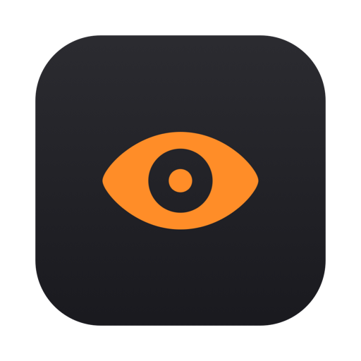

Mac이 잠들지 않게.
Mac이 잠들지 못하게 막는 macOS 메뉴바 앱. Caffeine 계열이지만 정공법으로 만들었습니다. 공식 API만, 권한 요구 0.
기능
클릭 한 번 또는 타이머로, 화면만 또는 시스템만, 그리고 스스로 켜지는 자동 트리거까지.
무기한, 또는 15분 / 1시간 / 2시간 / 5시간. 아이콘 옆에 남은 시간이 실시간 표시됩니다.
화면까지 켜두거나, 다운로드 중엔 화면은 꺼지되 시스템만 깨어있게 할 수 있습니다.
충전(AC) 연결·외장 디스플레이·특정 앱 실행·특정 네트워크에서 자동으로 켜집니다.
배터리 사용 중 설정한 임계치 아래로 떨어지면 안전하게 자동 종료됩니다. 방전 걱정 없이.
뜬 주황 눈 = 깨어있음(+남은 시간), 감은 눈 = 잠들 수 있음. 메뉴바에서 바로 확인됩니다.
원하면 로그인 시 자동 시작. Apple 정식 SMAppService를 사용합니다.
위치·손쉬운 사용·화면 기록 권한을 전혀 요구하지 않습니다. 공식·문서화된 Apple API만 사용하고, 모든 빌드는 Apple 공증을 받습니다.
설치
설치 프로그램도, 설정도, 계정도 없습니다. 드래그하면 끝.
서명·공증된 최신 빌드를 내려받습니다.
.dmg를 열고 Mara를 Applications 폴더로 옮깁니다.
메뉴바에 눈 아이콘이 나타납니다. 클릭해서 잠들기를 막으세요.
Developer ID 서명 + Apple 공증 — Gatekeeper 경고 없음. macOS 14 이상 (Apple Silicon·Intel).